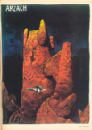
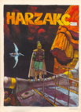
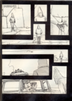

|
Arzach |
|
 |
The
first of Moebius' Arzach comic series. Arzach made his debut in the
first issue of Heavy Metal Magazine April - Vol. 1 No. 1. Arzach
is seen flying atop his trusty pterodactyl in a strange world. Spotting
a beautiful naked woman through a rounded window, Arzach is determined
to win her heart, but what awaits him is utterly unexpected. |
Harzak |
|
 |
The next comic
called Harzak appeared in the May issue- Vol. 1 No. 2 of
Heavy Metal Magazine. Arzach finds himself flying over a strange
plain of man eating vegetation. He also has to escape the wrath of a giant
red beast. Will Arzach and his pterodactyl survive? |
Arzak |
|
 |
The third comic called Arzak
appeared in the June issue- Vol. 1 No. 3 of Heavy Metal Magazine.
A lone engineer from a distant land arrives at a mysterious ruin. Found
inside are strange gold colored men. The engineer, after much hardship,
arrives inside an odd room. Therein, Arzach can be seen on a viewing screen.
Just what is going on here? Find out for yourself. |
Harzakc |
|
 |
The fourth comic
called Harzakc appeared in the July issue - Vol. 1 No. 4
of Heavy Metal Magazine. Arzach is seen peeping in on a beautiful
woman. He later jumps across what looks like a giant human skull. Flying
across a vast landscape full of hordes of strange creatures and towers,
he soon arrives at a peculiar ruin. |
Harzack |
|
 |
The last comic called Harzack also appeared in the July issue - Vol. 1 No. 4 of Heavy Metal Magazine. Arzack is taking a leak where he isn't supposed to and is soon stopped by two police men. Something amazingly strange happens and Arzack runs for his life! |